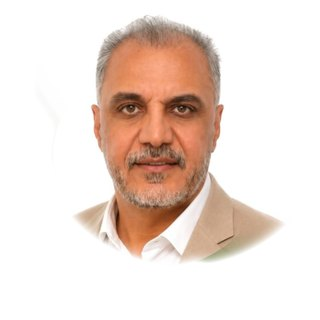
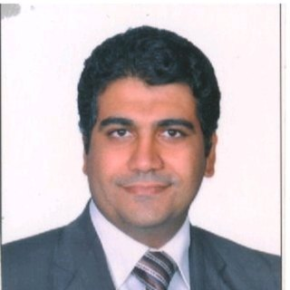

Recommendations
12 recommendations, verbatim from my LinkedIn profile.
Managed me (2)
 Maher Abu GhaliintelliSYS Solutions & Consulting, Founder & CEOOctober 10, 2026 · Maher managed Hosam directly
Maher Abu GhaliintelliSYS Solutions & Consulting, Founder & CEOOctober 10, 2026 · Maher managed Hosam directlyAs Chief Executive Officer of intelliSYS, I am pleased to recommend Hosam Ibrahim […]. Working closely with him, I valued his technical judgment, business vision and friendly, professional manner.
Hosam progressed from Senior Software Engineer and Team Lead through Head of Professional Services / Senior Solutions Architect to Head of Engineering, retaining architecture duties. He connected requirements and technical planning with engineering delivery, client implementation, deployment and configuration.
He mentored and trained junior engineers, assessed team members' work, conducted technical hiring interviews and delivered training on recurring issues. His generosity in sharing knowledge made him a supportive team leader.
His technical breadth includes software development, data integration and migration, reporting, visualization, delivery automation, performance tuning and production architecture, with experience spanning independently deployed services, queues and asynchronous processing.
Hosam brings substantial AML/CFT knowledge from the Financial Intelligence Unit perspective, covering reporting-entity registration, financial-institution and DNFBP reporting, information exchange, transaction-data quality, screening and profiling, and case management. He applied this understanding across FIU360, Data Enrichment and Data Visualization.
[…]
He contributed to technical discovery, demonstrations or proofs of concept, proposals and scoping, connecting client needs with product opportunities. Learning Clarity, built with his team under his architecture and product guidance, extended his experience into AI-assisted development, including directing coding AI and reviewing code or configuration in parts of the build.
I appreciate his ability to learn and apply unfamiliar domains, tools and technologies, bringing curiosity to technical challenges and business opportunities.
I would gladly work with Hosam again and recommend him to organizations seeking a professional who can develop people, shape solutions and engage clients with sound judgment and warmth.
 Haytham Fikry FadalyRegional Service Delivery Manager - Tech-HubJune 20, 2026 · Haytham Fikry managed Hosam directly
Haytham Fikry FadalyRegional Service Delivery Manager - Tech-HubJune 20, 2026 · Haytham Fikry managed Hosam directlyI am delighted to recommend Hosam Ibrahim, an exceptional Business & Systems Analyst, Senior Solutions Architect, and technology leader.
Hosam combines deep technical expertise with a rare ability to understand business needs and translate them into scalable, high-impact solutions. Throughout his career, he has consistently demonstrated excellence in enterprise architecture, software engineering, data integration, digital transformation, and project leadership.
What distinguishes Hosam is his ability to bridge the gap between strategy and execution. He approaches complex business challenges with a structured analytical mindset, designs robust architectures, and leads teams toward successful delivery while maintaining a strong focus on quality, performance, and business value.
His extensive experience across industries—including financial services, compliance and AML solutions, ERP systems, HR platforms, event management, data engineering, and enterprise applications—reflects both remarkable versatility and a commitment to continuous innovation. He has successfully delivered solutions across multiple international markets, working effectively with diverse stakeholders and cross-functional teams.
Beyond his technical capabilities, Hosam is a collaborative leader and mentor who empowers those around him. His professionalism, integrity, and dedication to excellence make him a trusted advisor for organizations seeking to modernize systems, optimize operations, and achieve sustainable growth.
I highly recommend Hosam to any organization looking for a strategic technology leader who can transform complex requirements into practical, scalable, and business-driven solutions. His combination of leadership, architectural vision, and hands-on expertise is truly outstanding.
Reported to me (3)
 Khaled MaherSoftware Engineer at IntelliSYSOctober 10, 2026 · Khaled reported to Hosam directly
Khaled MaherSoftware Engineer at IntelliSYSOctober 10, 2026 · Khaled reported to Hosam directlyI worked under Hosam for two and a half years at intelliSYS Solutions & Consulting, where he was my team lead and direct manager. Writing this recommendation is a genuine pleasure, because few people have influenced my career as much as he has, both technically and personally.
Technically, Hosam is one of the most well-versed engineers I have ever worked with. His understanding of software architecture, system design and engineering best practices is both broad and deep, and he has a rare ability to see how every part of a system fits together, from the overall architecture down to the smallest implementation detail. He combines that depth with real curiosity about new technologies and a clear sense of when, and when not, to adopt them. Whatever problem we brought to him, he understood it quickly and found the right technical path forward. Every discussion with him was a lesson in itself.
What stands out most is the way he thinks. Hosam never takes a problem at face value. He questions assumptions, asks the questions others overlook, and examines an issue from every angle before choosing a direction. He then breaks even the most complex work into clear, structured pieces with a logical plan, so the whole team knows exactly what to build and why. Watching him work taught me to think critically, to structure a problem before solving it, and to design before building. Those habits have become part of how I work every day.
As a leader, Hosam sets the example himself. His commitment to quality and to his team is constant, and he set a standard the rest of us genuinely wanted to meet. He gave us clear direction while trusting us with real responsibility, and he was always there when we needed support. He was patient when I needed guidance, honest when I needed feedback, and always generous with his time and knowledge. Under his leadership, the team felt both challenged and supported.
On a personal level, Hosam has been a true role model for me: in how to approach technology with depth and curiosity, how to take full ownership of my work, and how to treat colleagues with respect and kindness. He believed in me, encouraged me to take on bigger challenges, and helped me build the confidence to grow. I became a better engineer and a better professional because of him, and I am truly grateful for the years I spent on his team.
I recommend Hosam wholeheartedly to any organization looking for a strong technical leader, and I would be glad to work with him again.
 Mohamed GamalSoftware Engineer | Building Scalable Web & Backend Systems | .NETOctober 11, 2026 · Mohamed reported to Hosam directly
Mohamed GamalSoftware Engineer | Building Scalable Web & Backend Systems | .NETOctober 11, 2026 · Mohamed reported to Hosam directlyI had the privilege of working with Hosam Ibrahim at IntelliSys, where he was not only my team leader but also one of the most influential people in my journey as a software engineer.
I started learning software engineering under his guidance, beginning with small applications and gradually learning how to turn requirements into complete, well-designed solutions. He taught me the importance of understanding requirements, designing databases and relationships, writing clean and maintainable code, solving problems, and taking full ownership of my work.
What truly sets Hosam apart is his ability to lead by example. He is exceptionally responsible, focused, and effective, and he genuinely invests in helping his team grow. I learned a great deal from his approach to research, finding the right solutions, following best practices, and making thoughtful technical decisions.
Hosam is someone who combines strong technical expertise with outstanding leadership, teamwork, and a genuine willingness to share his knowledge. I am grateful to have learned from him, and I highly recommend him to any team looking for a technically strong, dependable, and dedicated leader.
 Abdalhameed AtifSoftware EngineerOctober 10, 2026 · Abdalhameed reported to Hosam directly
Abdalhameed AtifSoftware EngineerOctober 10, 2026 · Abdalhameed reported to Hosam directlyI’ve had the opportunity to work under Hosam Ibrahim’s management, and I truly appreciate his technical expertise, leadership, and willingness to support and guide his team.
Hosam has a strong ability to break down complex problems, think analytically, and guide the team toward practical and effective solutions. What I particularly value is his ability to communicate technical concepts clearly, share his knowledge, and help team members grow professionally.
Beyond his technical skills, Hosam demonstrates professionalism, patience, and a collaborative approach to leadership. He creates an environment where questions are welcomed, ideas are valued, and continuous learning is encouraged.
I’m grateful for the opportunity to learn from him and work under his guidance. I highly recommend Hosam to any organization looking for an experienced technology leader who combines strong technical knowledge with excellent problem-solving, communication, and people-management skills.
Worked with me (7)

Ashraf Ahmed SolimanIT Business ConsultantApril 18, 2025 · Ashraf Ahmed was senior to Hosam but didn’t manage Hosam directlyI had the pleasure of working with Hosam Fazie at Rakaaiz, where he consistently demonstrated dedication, creativity, and a strong work ethic. Hosam played a key role in driving our projects forward with his problem-solving skills and ability to collaborate effectively with the team. His proactive approach and attention to detail made a significant impact on our success.
Hosam is not only a reliable and skilled professional but also someone who brings positive energy to the workplace. I highly recommend him for any role that values initiative, teamwork, and high performance.
 Zeyad AbdoonProfessional Services & Solutions | AML & FIU Systems | Microsoft Power Platform | Project & Team ManagementOctober 13, 2026 · Zeyad worked with Hosam on the same team
Zeyad AbdoonProfessional Services & Solutions | AML & FIU Systems | Microsoft Power Platform | Project & Team ManagementOctober 13, 2026 · Zeyad worked with Hosam on the same teamI had the pleasure of working with Hossam for seven years, and throughout that time, I’ve come to appreciate his technical expertise, problem-solving skills, and dedication to software engineering.
Hossam has a strong ability to understand complex requirements, break down challenging problems, and turn them into practical, well-designed solutions. His deep understanding of software engineering, system architecture, and databases, combined with his analytical mindset, makes him a valuable colleague to work with.
What I particularly appreciate about Hossam is his commitment to quality and his ability to look at problems from both a technical and business perspective. Over the years, I’ve seen the value he brings through his experience, thoughtful approach, and focus on building reliable, maintainable solutions.
Working closely with Eng. Hosam has been a genuinely great experience. Beyond his massive technical background and deep expertise in the field, what I appreciate most is his practical, supportive leadership style.
Eng. Hosam has a unique way of analyzing complex tasks and helping the team break them down smoothly.
Whenever a project felt huge or overwhelming, he taught me how to approach it step-by-step organizing time properly, doing structured research, and splitting tasks into smaller, manageable pieces so they become easy to handle. He’s always patient, looks out for the team, and makes sure everyone grows along the way.
I've learned a lot working with him, and any team would be lucky to have him.
I’ve had the privilege of working closely with Hosam Ibrahim for over 1 year, and I can say without hesitation that he is one of the most talented technologists and leaders I’ve ever encountered.
From day one, Hosam has brought an unparalleled clarity of thought to every challenge we face. He doesn’t just dive in—he carefully structures problems into manageable pieces, lays out a roadmap for the team, and ensures that everyone understands both the “why” and the “how.” Watching him deconstruct complex, seemingly insurmountable technical issues and then guide us step-by-step toward elegant solutions is nothing short of inspiring.
What truly sets Hosam apart, though, is his humility and genuine care for the growth of each team member. He is always ready to listen—whether you’re proposing a new idea, struggling with a piece of code, or simply need advice on your career path. I’ve learned more from his patient mentoring and thoughtful feedback than from any book or course. Under his leadership, I’ve seen our team’s skills sharpen, our processes become more efficient, and our confidence skyrocket.
I’m grateful for everything I’ve learned from him and what I will learn from him in the future, and I know that any organization will be lucky to have Hosam on their side.
I wholeheartedly recommend Hosam Ibrahim to anyone seeking a visionary tech lead who can both solve giant problems and uplift the people around him.

Mahmoud MansourBusiness & Technology Leader | 18+ Years in Software Engineering | Driving Digital TransformationApril 21, 2025 · Mahmoud worked with Hosam on the same teamI had the chance to work with Hosam Ibrahim at DPME, and honestly, he’s one of the most reliable and knowledgeable tech professionals I’ve worked with.
Hosam has a solid background in software development and architecture, and it really shows in the way he tackles problems and designs smart, scalable solutions. He’s not just technically strong – he also understands business needs and knows how to bridge the gap between tech and business.
What I appreciated most is how calm and focused he is, even when things get complicated or deadlines are tight. He’s always ready to help and share knowledge, and working with him made a real difference in the team’s output.
I’d definitely recommend Hosam for any role that needs a sharp mind, steady hands, and solid experience.
I had the pleasure of working closely with Hosam in a software development environment, and I can say without hesitation that he’s an outstanding developer and leader.
Hosam has a deep understanding of software development principles and a strong ability to design and implement scalable, efficient solutions. Whether tackling complex technical challenges or optimizing systems for performance, he approaches every task with precision and a clear focus on quality. His technical acumen is matched by his ability to innovate and solve problems in creative ways.
As a team leader, Hosam stands out for his ability to guide and inspire others. He has a natural talent for breaking down complex problems and leading teams toward effective solutions. He communicates with clarity and always makes sure that everyone is aligned on goals and expectations. His collaborative nature fosters a supportive environment, where team members feel encouraged to share ideas and learn from one another.
Hosam’s leadership goes beyond technical expertise. He is genuinely invested in the growth of those around him, taking the time to mentor junior developers and share his knowledge. His calm and focused demeanor, even under pressure, sets a positive tone for the entire team and ensures that projects stay on track.
What I appreciated most about Hosam is his commitment to continuous improvement, both in terms of personal growth and team development. He’s always up-to-date with the latest technologies, eager to adopt best practices, and willing to implement changes that benefit the team as a whole.
In summary, Hosam is a highly skilled developer with excellent leadership capabilities. He combines technical expertise with a strong ability to lead teams and drive projects forward. Any organization would be lucky to have him on board, and I highly recommend him for any leadership or senior technical role.
I highly recommend Hosam Fazie. As a former Senior Developer, his technical expertise and dedication were evident. Now, as a Software Architect, his strategic vision is commendable. He is a valuable professional and a pleasure to have worked with. I wish him continued success.